Requisitos previos
Navegador web:
Asegúrate de tener un navegador moderno (Chrome, firefox, safari, etc.)
Conexiòn a internet:
Necesitas acceso a internet para interactuar con el sistema.
Pasos guia para el uso e inicio de sesion en Copilot con ejemplos para estudiantes
Abre el navegador de tu preferencia y escribe en la barra
de diecciones (en este caso de utilizaremos google) y copia y pega
la siguiente url: https://copilot.microsoft.com/

Luego de poner el url presiona la tecla Enter y aparecera la siguiente pantalla
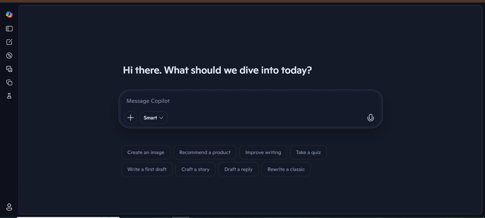
EJEMPLO
Empieza tus investigaciones, resolver tus dudas o descubrir nuevas cosas.
utilizaremos un ejemplo basico en Copilot para iniciar sesion en Microsoft
en el caso de haberlo olvidado.
ADVERTENCIA
Si al escribir la pregunta nos saliera esta pantalla:
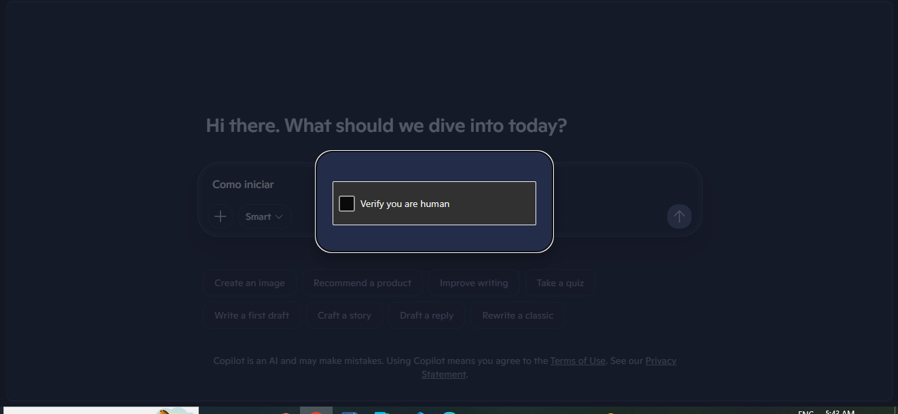
Solo hay que darle a aceptar y seguir escribiendo.
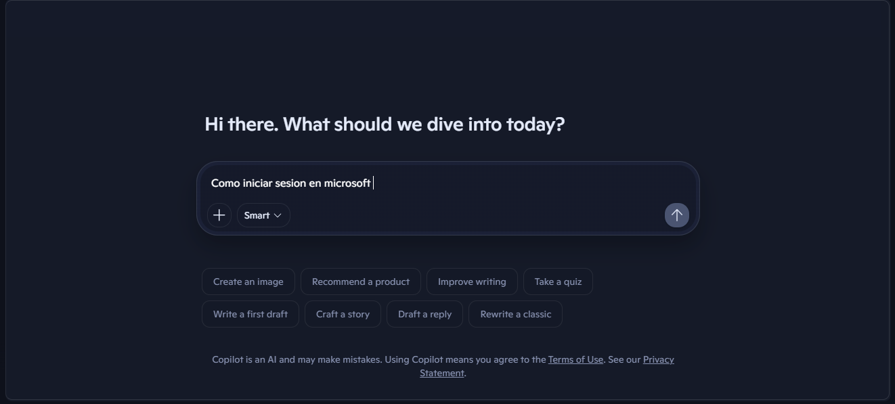
Ahora, observamos que la pregunta ya esta realizada en la barra
donde puedes digitar un mensaje para copilot y le presionamos Enter.
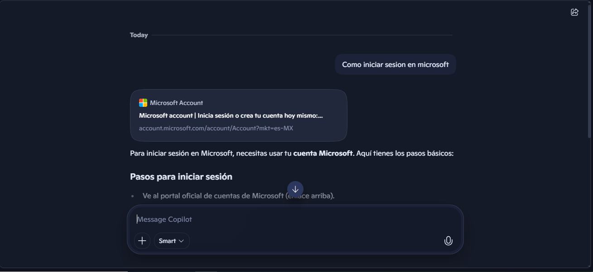
Al ya ejecutar, nos aparecerà toda la informacion necesaria para iniciar sesion en Microsoft.
Preguntar con el microfono
Vamos a hacer otra pregunta del mismo tema, pero con el microfono.
Presionamos el boton de microfono
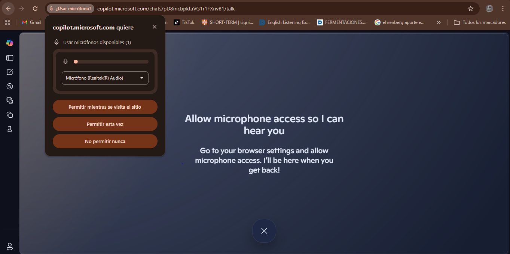
Damos el acceso al microfono.
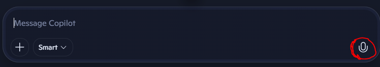
le recomendamos poner "mientras se visita el sitio" sino,
se vera obligado a que cada vez que usted quiera preguntarle
algo a Copilot cuando vuelva a iniciar
debe darle el permiso y es estedioso hacer eso.
Empezar nuestra pregunta
La pregunta es: ¿Còmo podemos recuperar la contraseña de Microsoft?
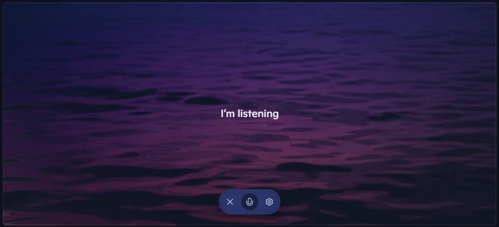
Cuando terminamos la pregunta presionamos en X.
En Copilot no nos sale què estamos diciendo, solo debemos de confiar
que se nos haya escuchado bien, en todo caso que no repite el paso 3.
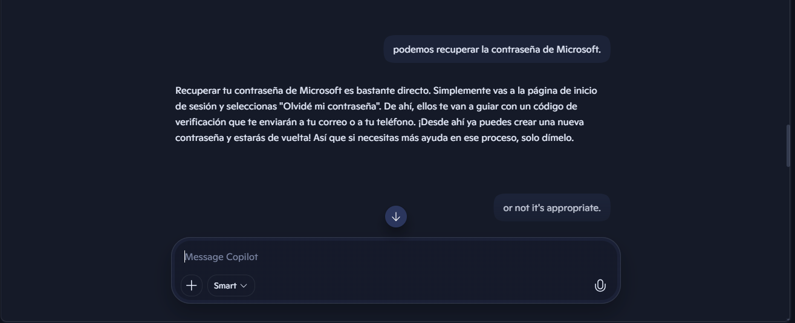
Vemos que ya esta hecha la pregunta y Copilot nos contesto.
Inicio de sesion
Para que nuestras conversaciones e imagenes en Copilot se mantengan debemos de iniciar sesion.
A la opcion de "iniciar sesion" o "sign up" en la parte inferior de la pantalla
al lado izquierdo es de darle click. vemos como primera opcion "sign up", lo presionamos
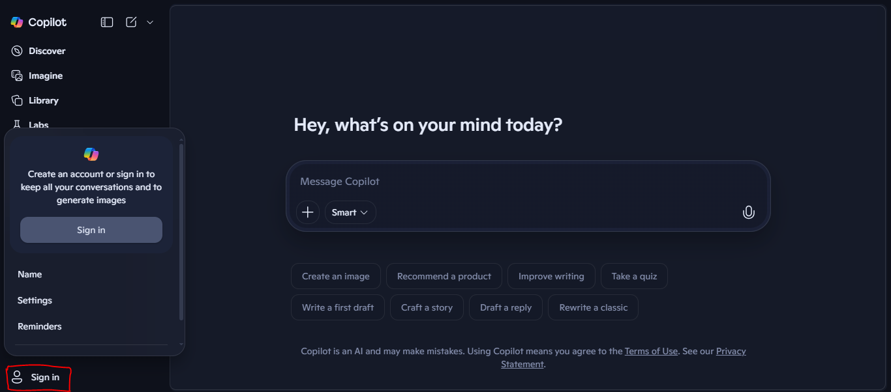
Iniciamos sesion como preferimos, en este caso, se realizarà con "continuar con google"
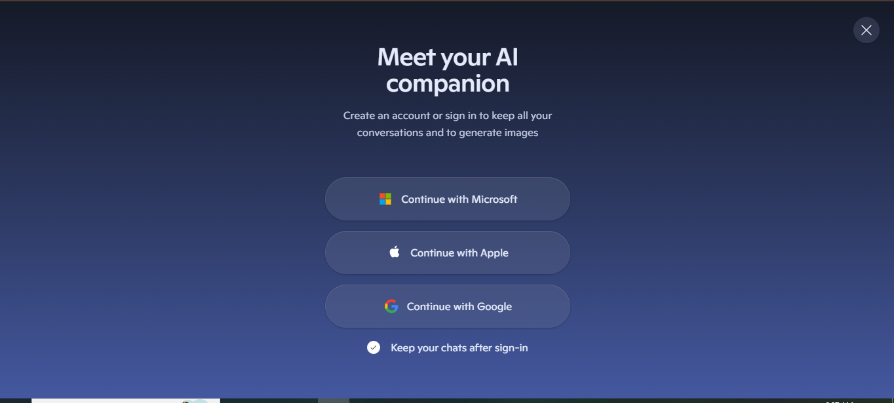
Elegimos la cuenta con la que iniciaremos sesion
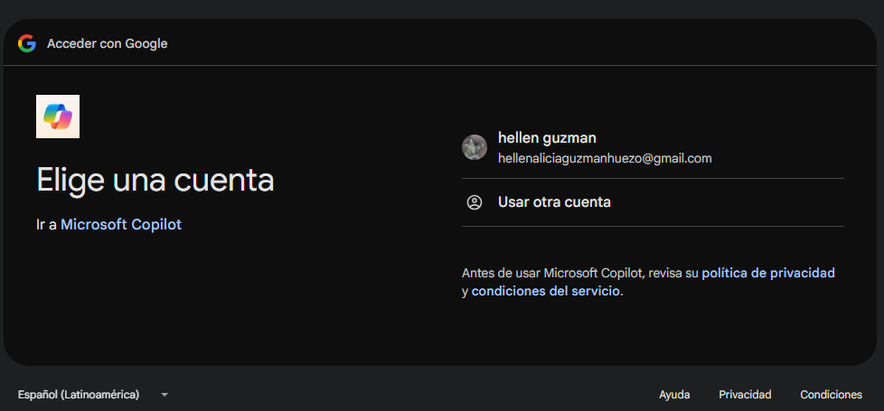
Copilot nos darà a conocer què informacion quiere de nosotros, le damos a continuar.
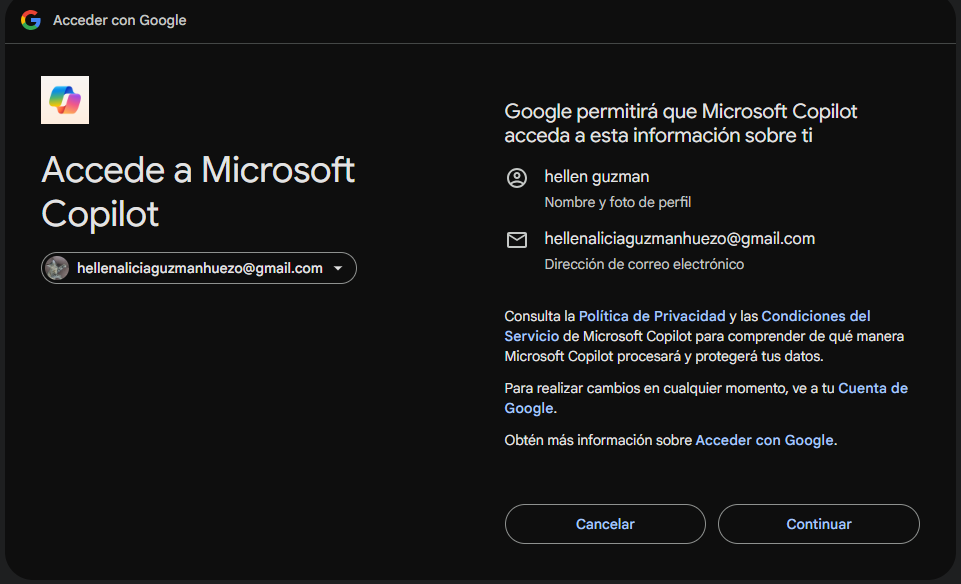
Llenar la informacion que se pide y darle a continuar
ESTO ES OBLIGATORIO
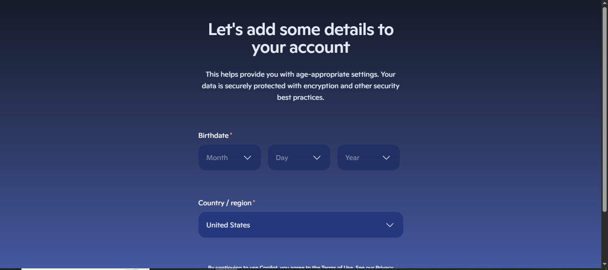
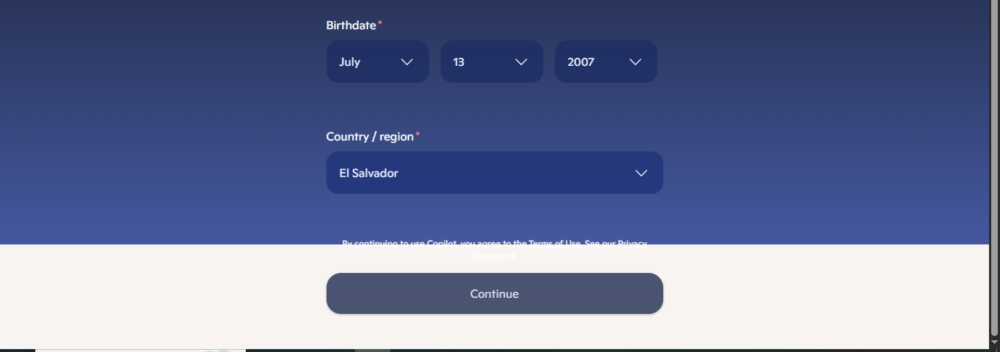
Eso seria todo para el inicio de sesion.
Empezar a utilizar las herramientas
Al ya tener una cuenta hecha, podemos guardar informacion que utilizaremos diario o mas de dos veces.
Realizaremos un ejemplo que podamos utilizar màs de una vez:
Estudiamos para el examen de ciencias sobre energia cinetica
y queremos repasar lo aprendido antes del examen
Cliqueamos en el boton "+" y seleccionamos "Take a quiz".
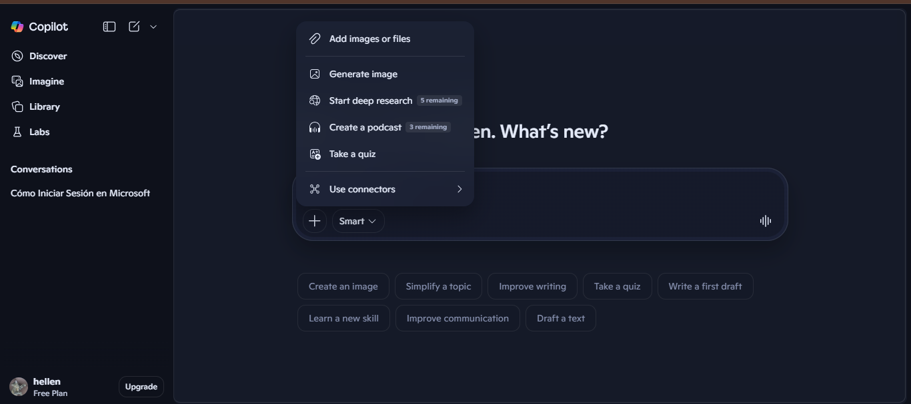
Redactamos de què queremos que sea el quiz, en este ejemplo es: energia cinetica.
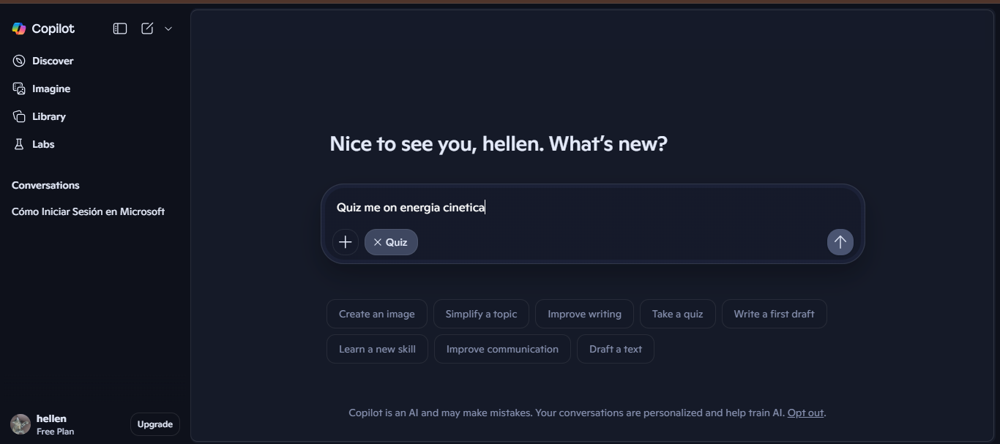
Le presionamos enter y nos aparecera la siguiente pnantalla:
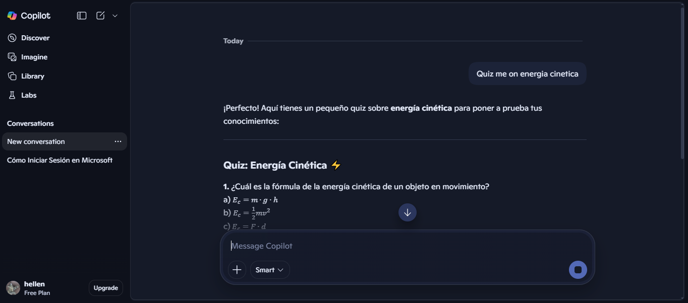
Ya estarìa, ahora podemos acceder a Copilot en cualquier momento y podemos repasar nuestro quiz.
IMPORTANTE
Al no tener la opcion premium, hay el peligro de que se borren conversaciones
por lo cual podemos acceder a la opcion plus al hacerle click a la parte inferior de la pantalla
donde dice "update" a la par de nuestra cuenta.
Esto contiene muchos beneficios, pero es opcional.
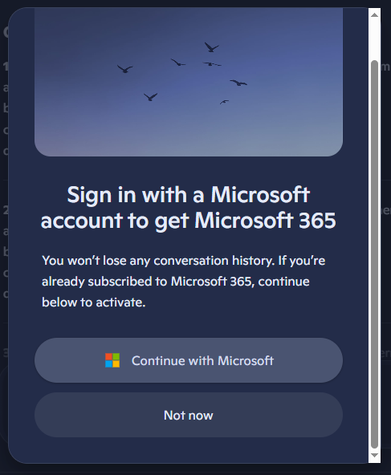
Obtener copilot gratis siendo estudiante